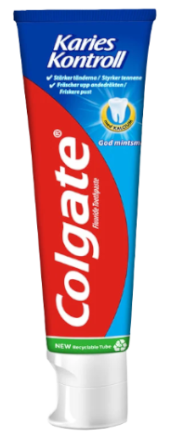
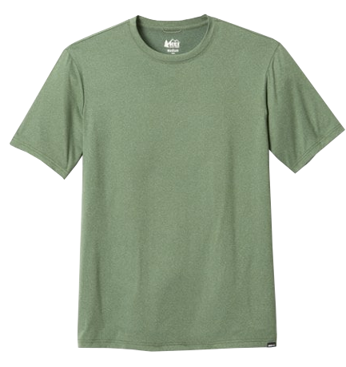
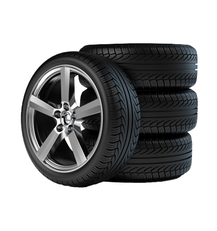
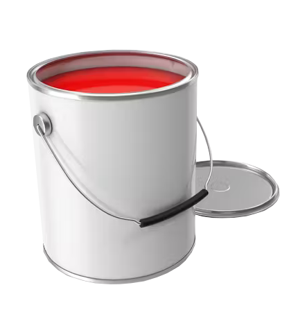
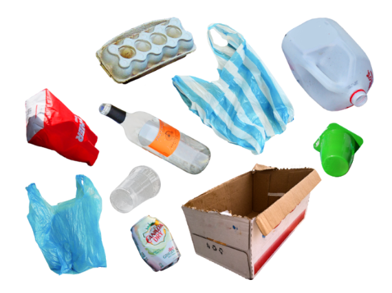

PLAST I HAVET
konsekvenser for klimaet
Hva er mikroplast?
Mikroplast er en type plast som består av små partikler som er mindre enn 5 millimeter i størrelse. Disse partiklene kan dannes når større plastprodukter brytes ned over tid eller når de legges til kosmetikk og kroppsvask som slipemidler eller bindemidler. I tillegg kan syntetiske tekstiler frigjøre mikroplast under vasking, og dette kan føre til alvorlige miljøproblemer. Mikroplast kan skade dyrelivet, spesielt fisk, sjøpattedyr og fugler, og det kan også føre til helseproblemer hos mennesker. Det er derfor viktig å ta tiltak for å redusere mengden av mikroplast som slippes ut i miljøet. Dette kan inkludere å øke bevisstheten rundt bruken av mikroplast og fremme alternative materialer. Sammen kan vi arbeide for å beskytte våre økosystemer og vår helse ved å ta ansvar for våre handlinger og valg.
Mikroplast er et økende miljøproblem som utgjør en stor trussel mot dyre- og planteliv i havet. Disse små plastpartiklene kan tas opp av organismer som fisk og skilpadder og skade eller til og med drepe dem. I tillegg kan mikroplast være skadelig for menneskers helse, da det kan samle seg opp i kroppen over tid. Kjemikalier som er tilsatt i plasten kan også ha negative helseeffekter. Dessverre er det vanskelig å fjerne mikroplast fra miljøet, da partiklene er så små og kan spres over store områder. Dette gjør det enda viktigere å ta ansvar for vår egen bruk av plast og redusere mengden av mikroplast som slippes ut i miljøet. Vi kan også jobbe for å fremme alternative materialer og endre produksjonsmetoder for å redusere plastforurensning og beskytte både dyre- og planteliv og vår egen helse.
Mikroplast kan finnes i blant annet:
Tannkrem ───────
─────── Syntetiske tekstiler
Bildekk ───────
─────── Maling
Husholdningsavfall ───────

I tillegg til tannkrem er kosmetiske og hudpleieprodukter som pudder, skrubber, badeskum, solkrem og deodoranter en stor utslippskilde til små plastpartikler.
Syntetiske tekstiler er en gruppe tekstiler som består av syntetiske fibre. De fire vanligste syntetiske fibrene er rayon, nylon, polyester og akryl. Disse blir brukt til å
lage blant annet klær, tau, fiskegarn og setebelter. I motsetning til naturfibre som kan bestå av blant annet silke, bomull, lin eller ull, er syntetiske fibre en kilde for
forrurensning av mikroplast.
De største kildene til utslipp av mikroplast er bildekk, biltrafikk og kunstgressbaner. I Norge dannes det rundt 8000 tonn mikroplast hvert år, og halvparten av dette havner
i havet. 2250 tonn av dette kommer fra slitasje av bildekk, ifølge Miljødirektoratet.
Nyere forskning viser at maling er den største kilden til utslipp av mirkoplast. Hele 58% av all mikroplast som havner i verdens hav
kommer fra partikler av maling. I tillegg til tungmetallutslipp, slipper hver enkelt oljeplatfrom ut 1100 kilo med mikroplast som stammer fra maling hvert år.
Plastprodukter fra husholdningsavfall bidrar også til mikroplastutslipp. Når større plastprodukter brytes ned av sollys, vær og vind, ender de resterende partiklene
ofte opp i havet. Plast tar flere hundre år å brytes ned i naturen, og den som havner i havet brytes ned enda langsommere enn den på land.
Spill
I dette spillet spiller du som en klovnefisk som må unngå innkommende mikroplastpartikler. Du har 3 liv. Lykke til!